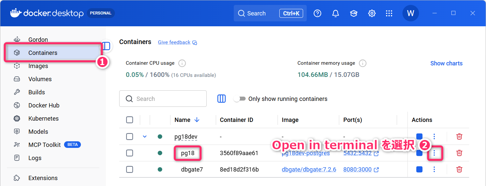
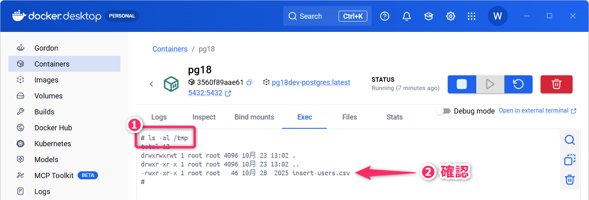

1 連絡
- 小テスト➍ を実施します。
- シラバス記載のように、小テストは最終評価の 35% に相当します。
- 遅刻・欠席等により追試験を希望する場合は 第01回講義で案内した手続き をしてください。
- 今回の講義内容は、前回講義 の内容をひととおり理解していることを前提とします。まだ、前回の内容 (授業時間外学習のセクションを含む) を終えていない人は、まずは、そちらから取り組んでください。
1.1 今回の達成目標
- トランザクションの役割を説明し、
COMMITとROLLBACKを使用して、一連のデータ変更を確定・取り消すことができる。 UPDATE・DELETEとWHERE句を使用して必要なレコードを更新・削除し、トランザクションによって変更を確定・取り消すことができる。COUNTやAVGなどの集約関数を使用して、NULLの扱いに注意しながら件数や平均値などを求めることができる。GROUP BY・WHERE・HAVINGを組み合わせ、集計対象と集計結果に条件を指定して、必要なグループ別の集計結果を取得できる。
2 準備と前回の復習
2.1 ハンズオン学習の準備
次の手順でSQL演習環境を立ち上げ、教材の更新を取得してください。
- SQL演習環境の動作確認 @ 第04回講義
- 教材の更新の取得 @ 第04回講義
今回も、第03回・第04回と同じ w03.users と w03.characters テーブルを使用します。教材の更新後は、from-teacher/05 に CSV ファイルと SQL ドリルの解答例があることを確認してください。
今回も、SQL ファイルごとに先頭で SET search_path TO w03;
を実行してください。これにより、そのファイル内では w03.users を
users、w03.characters を characters
と記述できます。
以降、演習用の SQL ファイルは、基本的に sql/05 の配下に作成してください。
2.2 前回の復習
前回講義では SELECT 文における ORDER BY 句、LIMIT
句、OFFSET 句、WHERE 句について学びました。
ORDER BYは、レコードの 整列順 (ソート順) を指定する ための句でした。LIMITは、取得するレコードの 件数を制限する ための句でした。OFFSETは、レコードの 取得開始位置を調整する (スキップする) ための句でした。WHEREは、抽出条件を指定する ための句でした。
これらを組み合わせることで、テーブルから「どのレコードを」「どの順で」「どの位置から」「何件だけ」取り出すかを柔軟に制御できるようになりました。
SQL における WHERE
は疑問詞としての「どこ？」ではなく、「〜という場所
(〜であるような行)」という関係副詞的な用法で使われています。つまり、WHERE
句は「〜という条件に該当する行を選ぶ」という指示になります。
- I came from Japan, where I was born and raised.
また、前回講義では、テーブルにレコードを挿入するための基本的な
INSERT 文と、その動作/挙動を安全に確認するため の
トランザクション ( START TRANSACTION ～ ROLLBACK )
についても学びました。
3 トランザクション
RDBMS における トランザクション（Transaction）とは、データの一貫性や整合性を保つために「論理的にひとまとまりとして扱う一連の操作や処理」のことです。
例えば、銀行口座から別の口座に送金する場合を考えてみます。この処理には「送金元の残高を減らす」「送金先の残高を増やす」という 2 つの操作がセットで必要です。
このように、ひとつの目的を達成するために必要な複数の操作を「一連の操作や処理」と呼んでいます。データの一貫性や整合性を保つためには、これらを「ひとまとまり」として扱う必要があります。
RDBMS では、トランザクションに含まれる一連の操作による変更を、必ず次のいずれかの形で処理します。
- すべての変更をまとめて確定する
- すべての変更を取り消して元に戻す
つまり、トランザクションに含まれる変更は「すべて確定する」か「すべて取り消される」の二択であり、一部だけが確定することが無いようになっています。この性質を 原子性 (Atomicity) といいます。
ACID特性
RDBMS のトランザクションには、ACID特性 と呼ばれる4つの重要な性質があります。
- 原子性（Atomicity）：すべての変更を確定するか、すべて取り消す。
- 一貫性（Consistency）：データの整合性が保たれる。
- 独立性（Isolation）：同時に実行されるトランザクションが不適切に干渉しない。
- 永続性（Durability）：確定した変更は、障害が発生しても失われない。
- RDBMS のトランザクションが備える ACID特性について、銀行口座間の送金を例に、それぞれの性質が保証されなかった場合にどのような問題が発生するのか、具体的に分かりやすく解説してください。
例えば、ひとつのトランザクションのなかに (＝ START TRANSACTION ～
COMMIT のなかに)、SQL-1、SQL-2、SQL-3
という3つの SQL 文が含まれているとすれば、
SQL-1とSQL-2は 成功 し、SQL-3は 失敗 したが、SQL-1とSQL-2による変更だけが確定した
…といった 中途半端な状態で変更が確定することを防ぐ 仕組みが用意されています。
具体的には、PostgreSQL では、SQL-3
の実行でエラーが発生すると、通常、そのトランザクションは失敗状態となり、SQL-1 と
SQL-2 の変更だけを確定することはできません。ROLLBACK によって、そのトランザクションで行ったすべての変更 をまとめて取り消します。
- 📖 教科書 pp.139-146 の「4-4 トランザクション」も参照してください。
3.1 トランザクションが必要とされる理由 (銀行送金の例)
一般に、トランザクションは次のような場面で非常に強力に機能します。
預金管理DBにおいて、Alice の口座から Bob の口座に 10,000 円を送金する。
この送金処理は、実際には次のような 2つの操作を組み合わせることで実現 されます。
- 送金元（Alice）の口座残高を10,000円減らす。
- 送金先（Bob）の口座残高を10,000円増やす。
この2つの操作は、必ずセットで成功させる必要があります。
Alice の残高だけが減ってしまえば、送金したはずのお金が「消える」ことになります。反対に、Bob の残高だけが増えてしまえば、存在しなかったお金が「増える」ことになります。つまり、2つの操作は両方とも成功するか、両方とも取り消されなければ、整合性が失われてしまいます。
そこで RDBMS では、複数の操作を ひとつのトランザクションとしてまとめ、すべて成功するか、すべて取り消すかのどちらかで扱う 仕組みを提供しています。
- コミット (
COMMIT)：すべての操作が正常に完了したときに、変更を確定する。 - ロールバック (
ROLLBACK)：途中でエラーが発生したときなどに、それまでの変更をすべて取り消し、元の状態に戻す。
先にも述べたように、複数の操作による変更を 「すべて確定するか」もしくは「すべて取り消すか」 という単位で扱う性質を、原子性 (アトミック性、不可分性、Atomicity) といいます。
銀行送金以外にも、トランザクションが必要となる操作 (原子性が要求される操作) は数多く存在します。
- ECサイトの注文処理：注文情報の登録と、商品の在庫数の減算をセットで実行する。片方だけが成功すると、注文情報と在庫数に不整合が生じる。
- 映画館やイベントの座席予約：座席を予約済みに変更する処理と、利用者の予約情報の登録をセットで実行する。片方だけが成功すると、予約情報と座席の空き状況が一致しなくなる。
- ポイントを利用した商品購入：保有ポイントの減算と、注文へのポイント利用の反映をセットで実行する。片方だけが成功すると、ポイント残高と注文内容に不整合が生じる。
- ネットショップで、残り1個の商品を2人が同時に購入する場合を考えています。「在庫を確認する処理」と「在庫を減らす処理」をひとつのトランザクションにまとめれば、在庫以上に販売することを防げると思ったのですが、この考え方で十分でしょうか。
3.1.1 定着確認
RDBMS において、データの一貫性や整合性を保つために、論理的にひとまとまりとして扱う一連の操作や処理を何というか答えよ。
- 答え: トランザクション。
トランザクションに含まれる変更が「すべて確定する」か「すべて取り消される」かのいずれかとなり、一部の変更だけが確定しない性質を何というか。日本語と英語で答えよ。
- 答え: 原子性 (アトミック性、不可分性)。Atomicity。
トランザクションによる変更をまとめて確定する処理と、変更をまとめて取り消す処理の名称を、それぞれ対応する SQL キーワードとともに答えよ。
- 答え: 確定する処理はコミット (COMMIT)、取り消す処理はロールバック (ROLLBACK)。
Alice の残高が 50,000 円、Bob の残高が 20,000 円である。1つのトランザクション内で Alice から Bob に 10,000 円を送金する2つの残高更新を行った後、COMMIT せずに ROLLBACK した。他の処理による残高変更はないものとして、ロールバック後の2人の残高を答えよ。
- 答え: Alice は 50,000 円、Bob は 20,000 円。トランザクション内の残高更新は両方とも取り消される。
PostgreSQL の1つのトランザクション内で SQL-1 と SQL-2 が成功した後、SQL-3 の実行でエラーが発生し、トランザクションが失敗状態になった。そのまま SQL-1 と SQL-2 の変更だけをコミットできるか、理由とともに答えよ。
- 答え: できない。失敗状態のトランザクションでは、それまでに成功した操作の変更だけを確定することはできない。
🏅 応用情報技術者試験 平成 24 年度春期 午前 問30
🏅 データベーススペシャリスト試験 令和 4 年度秋期 午前Ⅱ 問15
🏅 データベーススペシャリスト試験 平成 28 年度春期 午前Ⅱ 問17
3.2 トランザクションの使用例
ここでは w03.users テーブルを使用して「トランザクションの基本的な使い方」を確認していきます。まずは、次のコマンドで w03.users テーブルを初期化してください。既存のデータも削除され、テーブルのレコードは Alice と Bob の2件に戻ります。
npm run sql from-teacher/03/init-users.sql現在、このテーブルには、Alice と Bob の2件のレコードのみが含まれています。この状態から、3件のレコードを挿入する一連の操作を ひとつのトランザクションとして実行 し、その動作を確認してみます。
sql/05/tmp.sql などの適当なファイルを作成して、以下の SQL を貼り付けて実行してください。
SET
search_path TO w03;
-- トランザクションの開始
START TRANSACTION;
-- 操作1 Carol の登録 (成功)
INSERT INTO
users (id, name, age)
VALUES
(3, 'Carol', 18);
-- 操作2 Dave の登録 (成功)
INSERT INTO
users (id, name, age)
VALUES
(4, 'Dave', NULL);
-- 操作3 Ellen の登録 (成功)
INSERT INTO
users (id, name, age)
VALUES
(5, 'Ellen', 17);
-- START TRANSACTION 以降の全ての操作が成功していれば「確定」
COMMIT;
-- テーブルの状態を確認
SELECT * FROM users ORDER BY id;この例では、第05行目 の START TRANSACTION
から、第26行目 の COMMIT までに含まれる操作
(「操作1」から「操作3」) がすべて正常完了するため、第26行目 の
COMMIT によって処理が確定され、結果がテーブルに反映されます。
コンソールには、次のような結果が出力されるはずです。
START TRANSACTION
INSERT 0 1
INSERT 0 1
INSERT 0 1
COMMIT
id | name | age
----+-------+-----
1 | Alice | 20
2 | Bob | 25
3 | Carol | 18
4 | Dave |
5 | Ellen | 17
(5 行)ここで、実行結果の 第02行目 から 第04行目 の
INSERT 0 1 は 各操作で1件のレコードが挿入されたこと
を表す応答となります。
- PostgreSQL 18 で、テーブルに1件のレコードを挿入したとき、
INSERT 0 1のような応答が返ってきます。ここでの0は、どのような意味ですか。
つづいて、トランザクションの途中で SQL 文の実行に失敗 (エラーが発生) した場合の挙動 について確認していきます。
まず、次のコマンドを実行して w03.users テーブルを初期化してください。先ほどの操作で追加したレコードを削除し、Alice と Bob の2件分のレコードだけが存在する状態に戻します。
npm run sql from-teacher/03/init-users.sql次に、以下の SQL 文を sql/05/tmp.sql に記述し、実行してみてください。
SET
search_path TO w03;
-- トランザクションの開始
START TRANSACTION;
-- 操作1 Carol の登録 (成功)
INSERT INTO
users (id, name, age)
VALUES
(3, 'Carol', 18);
-- 操作2 Dave の登録 (成功)
INSERT INTO
users (id, name, age)
VALUES
(4, 'Dave', NULL);
-- 操作3 Ellen の登録 (❌失敗 id=4 が重複)
INSERT INTO
users (id, name, age)
VALUES
(4, 'Ellen', 17);
-- START TRANSACTION 以降の全ての操作が成功していれば「確定」
COMMIT;
-- テーブルの状態を確認
SELECT * FROM users ORDER BY id;- 上記の SQL 文では、「操作2」でDaveの id に
4を指定し、さらに「操作3」でも、Ellenの id に同じ4を指定しようとしています。そのため、「操作3」では 主キーの重複によるエラー が生じることになります。
実行すると、次のような応答が得られます。
SET
START TRANSACTION
INSERT 0 1
INSERT 0 1
ROLLBACK
id | name | age
----+-------+-----
1 | Alice | 20
2 | Bob | 25
(2 行)
----- stderr from psql (sql/05/tmp.sql) -----
psql:<stdin>:23: ERROR: 重複したキー値は一意性制約"users_pkey"違反となります
DETAIL: キー (id)=(4) はすでに存在します。INSERT 0 1 が 2
回出力されていることから、「操作1」と「操作2」の挿入には成功したことが分かります。ただし、この時点では、これらの変更はまだ確定されていません。
ここで注目してほしいのは、第26行目 に COMMIT
と記述しているにもかかわらず、その応答が ROLLBACK になっていることです。
「操作3」によってエラーが発生したことにより、トランザクションは失敗状態となります。
このような失敗状態で COMMIT
文に到達すると、「コミット」ではなく「ロールバック」が実行されます。その結果、途中まで成功していた「操作1」と「操作2」の変更もまとめて取り消され、トランザクション開始前の状態に戻ります。
実際、第29行目 の SELECT
文を実行すると、(ロールバックされた結果として) Alice と Bob
の2件だけが表示されることが分かります。
中級者向け：SQL演習環境のSQLランナーの動作
npm run sql で使用しているSQLランナー
(scripts/sqlFileRunner.ts) は、psql
の応答（標準出力）をまとめて表示したあと、stderr from psql (...)
という見出しを付けて、エラーメッセージ（標準エラー出力）を表示するように実装されています。
そのため、エラーメッセージが最後に表示されていても、最後の SELECT
文のあとにエラーが発生したわけではありません。エラーメッセージに含まれる
psql:<stdin>:23
は、SQLファイルの第23行目でエラーが発生したことを示しています。
3.2.1 演習
sql/05/tmp.sql の「操作3」と COMMIT
の間に、次の「操作4」を追加してみてください。ここで「操作3」の id
の重複は、意図的に残しておきます。
「操作3」でエラーが発生したあと、「操作4」の INSERT
文が実行されるかどうか
を予想してください。具体的には、直ちにロールバックされて「操作4」まで処理が進まないのか、それとも「操作4」の実行も試みられるのかを考えてみてください。
そのうえで、実際に実行して、どのような結果になるか (どのような応答が返ってくるのか) を確認してください。
3.3 明示的なロールバック
START TRANSACTION ～ COMMIT において、COMMIT
の代わりに ROLLBACK を記述すると明示的に
ロールバック をかけることができます。
SET
search_path TO w03;
-- トランザクションの開始
START TRANSACTION;
INSERT INTO
users (id, name, age)
VALUES
(3, 'Carol', 18);
-- テーブルの状態を確認 👉 Carol のレコードが存在する
SELECT * FROM users ORDER BY id;
-- 明示的にロールバックを実行
ROLLBACK;
-- テーブルの状態を確認 👉 Carol のレコードが存在しない
SELECT * FROM users ORDER BY id;- PostgreSQLで、
UPDATEやDELETEを実行したあとにROLLBACKすると、変更前の状態に戻ります。これは、変更前のデータをどこかに保存しているのでしょうか。それとも、COMMITするまでは実際のデータを書き換えていないのでしょうか。内部でどのような仕組みになっているのか気になって眠れません。
注意
以下、演習のなかで UPDATE 文や DELETE
文を扱いますが、特に指示のないかぎりは「START TRANSACTION ～
ROLLBACK」の内部で処理を実行するようにしてください。
3.3.1 定着確認
- PostgreSQL において、トランザクションを開始する際に使用する SQL キーワード (2語)
を答えよ。大文字で答えること。
- 答え :
START TRANSACTION
- 答え :
- PostgreSQL において、トランザクションを取り消す (元に戻す) 際に使用する SQL
キーワードを答えよ。大文字で答えること。
- 答え :
ROLLBACK
- 答え :
- PostgreSQL において、トランザクション内の処理を確定する際に使用する SQL
キーワードを答えよ。大文字で答えること。
- 答え :
COMMIT
- 答え :
- w03.users には Alice と Bob
の2件だけが登録されている。トランザクションを開始し、Carol
を1件挿入した。同じ接続で、
ROLLBACKの直前と直後にSELECT COUNT(*) FROM w03.users;を実行したとき、それぞれ何件になるか答えよ。- 答え: 直前は3件、直後は2件。
- w03.users に対してトランザクションを開始し、Carol を1件挿入して
COMMITした。その後、新しいトランザクションを開始して、データを変更せずにROLLBACKした。先に挿入した Carol のレコードは取り消されるか答えよ。- 答え: 取り消されない。先のCOMMITで確定した変更は、後から開始したトランザクションのROLLBACKでは取り消されない。
4 CSVファイルからのINSERT
前回講義 では INSERT
文を使って「テーブルに 1
件ずつレコードを挿入する方法」を紹介しました。しかし、実務では、数十件から数千件といった大量データを扱うことが多く、そのようなときは「CSVファイル」を使ってデータを一括挿入することが一般的となります。
ここでは、CSVファイルを使ってレコードを一括挿入する手順 について説明します。
4.1 CSV ファイルの作成
テーブルにデータを挿入するための CSVファイル を用意します。
ここでは、w03.users テーブル用にあらかじめ用意された
from-teacher/05/insert-users.csv
を使用します。このファイルは、最新の教材の更新に含まれています。
VSCodeで insert-users.csv を開き、内容を確認してください。
なお、PostgreSQL へのデータの取り込みに使用する CSV ファイルは、文字コードを「BOMなしのUTF-8」、改行コードを「LF」 に設定しておくことを推奨します。
PostgreSQL は Windows 形式の改行コード (CR+LF) にも対応していますが、この授業では Docker 上の Linux 環境との統一や、Git での管理を考慮して「LF」を推奨 しています。
- UTF-8の「BOM付き」と「BOMなし」の違いについて教えてください。「BOM付き」が利用される場面としてはどのようなものがありますか。
4.2 CSV ファイルをコンテナに配置
insert-users.csv は、ホストOS (Windows) 上に存在するため、Docker
コンテナ内で動作している PostgreSQL からは直接取り込むことができません。
そのため、まずこの CSV ファイルをコンテナの /tmp/ にコピーします。VSCode
のターミナルから次のコマンドを実行してください。コマンドのなかの pg18
はdocker/docker-compose.yaml
の 第04行目 で指定している PostgreSQL コンテナの「名前」になります。
docker cp from-teacher/05/insert-users.csv pg18:/tmp/ファイルのコピーに成功すると、次のようなメッセージが返ってきます。
Successfully copied 46B (transferred 2.05kB) to pg18:/tmp/コピーが完了したら、実際にコンテナのなかにCSVファイルが配置されたことを確認していきます。第02回講義 で紹介したように
docker container exec -it pg18 bash
コマンドを使ってコンテナに接続してもよいですが、ここでは Docker
Desktop から確認する方法を紹介しておきます。
Docker Desktop のウィンドウで「Containers」を選択し、さらに「pg18」の三点リーダ から「Open in terminal」を選択してください。

これで、コンテナ内のシェル (/bin/sh)
に接続した状態になります。ls -al /tmp のコマンドで、コンテナ内の
/tmp に CSV ファイルがあることを確認してください。

この画面で bash と入力してEnterキーを押すと、標準のシェル（
/bin/sh ）から Bash（ /usr/bin/bash
）に切り替わり、プロンプトが次のように変化します。
# bash
root@...:/#Bash では、上下のカーソルキーで過去に実行したコマンドを呼び出したり、左右のカーソルキーで入力位置を移動したりできます。
- Linux (Debian / Ubuntu 系) における sh (
/bin/sh) と bash (/bin/bash) の違いについて解説してください。
4.3 CSV ファイルからテーブルに取り込み
PostgreSQL では、以下のような SQL 文 (第10行目 から 第14行目) により、CSV ファイルからレコードを一括でテーブルに取り込むことができます。
なお、実行前に、次のコマンドで w03.users を Alice と Bob の2件に戻してください。
npm run sql from-teacher/03/init-users.sqlSET
search_path TO w03;
START TRANSACTION;
-- レコード挿入前のテーブルを確認
SELECT * FROM users ORDER BY id;
-- CSVファイルからレコードを挿入
COPY users (id, name, age)
FROM
'/tmp/insert-users.csv'
WITH
(FORMAT csv, HEADER TRUE, NULL 'NULL', ENCODING 'UTF8');
-- レコード挿入後のテーブルを確認
SELECT * FROM users ORDER BY id;
ROLLBACK;第17行目 の SELECT
文の結果セットは次のようになります。David の age は空欄 (NULL)
となっていることを確認してください。
id | name | age
----+-------+-----
1 | Alice | 20
2 | Bob | 25
3 | Carol | 18
4 | David |
5 | Ellen | 17第19行目 の ROLLBACK
により、追加した3件は取り消されます。SELECT * FROM w03.users ORDER BY id;
で、Alice と Bob の2件に戻ったことを確認してください。
COPY は PostgreSQL 独自のコマンド で、CSV
ファイルなどの外部データを 高速
に取り込むことができます。FROM 句で指定するパス (ここでは
/tmp/insert-users.csv) は、Docker コンテナ内のファイルパス
ということに注意してください。
また、WITH 句 (第13行目 から)
では以下のような設定を行っています。
FORMAT csv: ファイルが CSV 形式であることを明示HEADER TRUE: CSV の1行目をカラム名として無視NULL 'NULL': CSV 内で「NULL」という文字列を NULL 値として扱うENCODING 'UTF8': 文字コードを UTF-8 として読み込む
その他、WITH 句のオプションについては、以下の 公式ドキュメント
を参照してください。
PostgreSQL において、
COPY ... WITH構文で CSVファイル からテーブルにデータを取り込みたいです。このとき、CSV ファイルには、改行やカンマを含む文字列データも含めたいです。どのように CSV ファイルを作成し、また、WITH句にはどのようなオプションを指定すればよいですか。PostgreSQL では、
COPY ... WITH構文で CSVファイルからテーブルにデータを取り込むことができます。MySQL でも同じ構文でデータの取り込みができますか。
4.3.1 定着確認
- PostgreSQL が Docker コンテナ内で動作している。SQLの
COPY users FROM '/tmp/insert-users.csv' WITH (FORMAT csv, HEADER TRUE);に指定したパスは、ホストOSとコンテナのどちらのファイルを指すか答えよ。- 答え: コンテナ内のファイルを指す。
- CSVの1行目が
id,name,age、2行目以降がデータである。PostgreSQL のCOPYで先頭行をデータとして取り込まないためのオプションを答えよ。- 答え:
HEADER TRUE
- 答え:
- w03.users の age は NULL を 許容する INTEGER
型である。CSV の1行に
4,David,NULLがあり、COPY users (id, name, age) ... WITH (FORMAT csv, HEADER TRUE, NULL 'NULL');で取り込む。David の age は、「数値 0」、「文字列 NULL」、「SQL の NULL」のどれになるか答えよ。- 答え: SQL の NULL になる。
- w03.users には Alice と Bob
の2件だけが登録されている。トランザクション内で、id が3、4、5 の 3 件を CSV
から取り込んだ。取込直後と、そのトランザクションを
ROLLBACKした直後のレコード数を答えよ。- 答え: 取込直後は5件、ROLLBACK直後は2件。
5 DELETE文 (基礎編)
テーブルからレコードを「削除」したいとき DELETE 文を使用します。実際に、次の
SQL を実行してみてください。
SET
search_path TO w03;
START TRANSACTION;
-- レコードを無条件削除
DELETE FROM characters;
-- 確認
SELECT * FROM characters;
ROLLBACK;第10行目 の SELECT
文によって、すべてのレコードが削除されたことが確認できます。ただし、最後の
ROLLBACK によって削除が取り消され、元の状態に戻ります。
一方で、「特定の条件を満たすレコードだけ」を削除したいような場合は WHERE 句
を使用します。例えば、last_login_at が、2025年7月31日以前 ( NULL
を含む) のレコードだけを削除したい場合は、次のようにします
(第07行目 から 第10行目 に注目)。
SET
search_path TO w03;
START TRANSACTION;
DELETE FROM characters
WHERE
last_login_at IS NULL OR
last_login_at < DATE '2025-08-01';
-- 確認
SELECT
id,
name,
last_login_at
FROM
characters
ORDER BY
last_login_at;
ROLLBACK;実行結果は、次のようになります。以下の 第02行目 の DELETE 5
という応答から 5件のレコードが削除されたこと が確認できます。
START TRANSACTION
DELETE 5
id | name | last_login_at
----+--------+---------------------
8 | Bob | 2025-08-03 09:11:00
17 | Wendy | 2025-08-08 10:56:00
12 | Dave | 2025-08-15 16:08:00
13 | Mallet | 2025-08-27 18:50:00
19 | Jack | 2025-09-02 15:43:00
10 | Oscar | 2025-09-10 21:00:00
9 | Walter | 2025-09-14 22:10:00
6 | Alice | 2025-09-18 14:22:00
11 | Ellen | 2025-09-25 23:55:00
7 | Trudy | 2025-09-29 12:37:00
18 | Carol | 2025-10-03 11:42:00
16 | Steve | 2025-10-06 09:14:00
14 | Eve | 2025-10-07 10:17:00
15 | Trent | 2025-10-11 17:20:00
(14 行)
ROLLBACK- 📖 教科書 pp.129-132 の「4-2 データの削除 (DELETE文の使い方)」も参照してください。
5.0.1 定着確認
- w03.characters の id はINTEGER型である。id が 3 または 5
のレコードだけを削除する
DELETE文を、INを使用して記述せよ。- 答え:
DELETE FROM w03.characters WHERE id IN (3, 5);
- 答え:
- w03.characters には 19 件のレコードがある。トランザクション内で
DELETE FROM w03.characters;を実行した直後と、ROLLBACKした直後のレコード数を答えよ。- 答え: DELETE 直後は0件、ROLLBACK 直後は19件。
- w03.characters テーブルの last_login_at カラムは
TIMESTAMP 型であり、未ログインの場合は
NULLが格納されている。未ログインのレコードだけを削除するためのWHERE句を記述せよ。- 答え:
WHERE last_login_at IS NULL
- 答え:
- PostgreSQL で
DELETE文を実行したところ、DELETE 5と表示された。この応答が示す内容を答えよ。- 答え: 5件のレコードが削除されたこと。
5.0.2 SQLドリル💻
ex-01_1.sql👉 w03.characters テーブルのレコードについて、2025年10月15日を基準日として、最終ログインから60日以上経過したレコードを削除する SQL 文を記述せよ。日数は last_login_at を DATE 型に変換し、基準日との差で求めること。last_login_at が NULL のレコードは削除しないこと。DATE型の「2025年10月15日」は、CAST('2025-10-15' AS DATE)またはDATE '2025-10-15'で得ることができます。
ex-01_2.sql👉 w03.characters テーブルのレコードについて、last_login_at がNULLで、created_on が2023年12月31日以前のレコードを削除する SQL 文を記述せよ。ex-01_3.sql👉 w03.characters テーブルのレコードについて、id が、3、5、8、9、10、14 の 6 件のレコードを削除する SQL 文を記述せよ。
6 UPDATE文 (基礎編)
既存のレコードの値を変更するには、UPDATE 文を使用します。DELETE
文でレコードを削除し、INSERT 文で再登録する方法も考えられますが、通常は
UPDATE 文で直接更新します。
関数型プログラミングでは、元のデータを変更せず、新しいデータを生成するイミュータブルな更新がよく用いられます。一方、RDBMS
では、データの整合性や他のテーブルとの関連を維持しながら、既存のレコードを更新する
UPDATE 文が基本となります。
- 📖 教科書 pp.133-138 の「4-3 データの更新 (UPDATE文の使い方)」も参照してください。
6.1 すべてのレコードの値を固定値で更新
たとえば、w03.characters
テーブルの全てのレコードについて、バフ解除 (buff を
0.0 に上書き) するためには、次のように SQL を記述します。
SET
search_path TO w03;
START TRANSACTION;
-- 更新前のレコードを確認 (省略)
-- 更新処理
UPDATE characters
SET
buff = 0.0;
-- 更新後のレコードを確認 (省略)
ROLLBACK;実行すると UPDATE 19 のような応答が表示されます。
もともと buff が 0.0 であったレコードについても、再度
0.0 に上書きされ、処理件数に含まれている点に注意してください。
6.1.1 SQLドリル💻
ex-02_1.sql👉 w03.characters テーブルの全レコードの buff を0.0に更新する SQL を記述せよ。START TRANSACTION～ROLLBACKを含め、更新前後には id、name、buff を id の昇順で取得して、更新結果を確認すること。
6.2 特定のレコードのみを更新
特定のレコードを指定して値を更新する場合は、WHERE
句を使用します。なお、UPDATE 文の SET 句では、カンマで区切って 複数のカラムを同時に更新すること ができます。
たとえば、id が「1」と「2」のキャラクタについて、guild
カラムを NULL にして、job カラムを Exile
(亡命者・追放者) に変更するには、次のように SQL 文を記述します。
SET
search_path TO w03;
START TRANSACTION;
-- 更新前のレコードを確認 (省略)
-- 更新処理
UPDATE characters
SET
guild = NULL,
job = 'Exile'
WHERE
id IN (1, 2);
-- 更新後のレコードを確認 (省略)
ROLLBACK;実行すると UPDATE 2 という応答が表示されます (2
件のレコードが更新されたことが分かります)。トランザクション内の「更新後のレコードを確認」の箇所に
SELECT id, name, job, guild FROM characters ORDER BY id;
を記述すると、次のように表示されます (先頭 2 件のみを抜粋)。
id | name | job | guild
----+---------+---------+--------
1 | Marvin | Exile |
2 | Zach | Exile |
～～以下略～～この例で変更されるのは、id が 1 と 2 のレコードの guild
と job だけです。name や level
など、SET 句に記述していないカラムの値は変わりません。
6.2.1 SQLドリル💻
ex-02_2.sql👉 w03.characters テーブルの job カラムについてWizardをMageに更新する SQL を記述せよ。
6.3 現在の値を利用した更新
UPDATE 文では 現在のカラム値
を参照した更新も可能です。たとえば、level を 現在値+2
にするには、次のように SQL を記述します。
SET
search_path TO w03;
START TRANSACTION;
-- 更新前のレコードを確認 (省略)
UPDATE characters
SET
level = level + 2;
-- 更新後のレコードを確認 (省略)
ROLLBACK;また、同じレコードのなかの「他のカラム値」を参照して更新することもできます。たとえば、buff
を SQRT(100-level)*0.05 に設定するには、次のように SQL 文を記述します。
SQRTは平方根を計算する関数です。
SET
search_path TO w03;
START TRANSACTION;
-- 更新前のレコードを確認 (省略)
UPDATE characters
SET
buff = SQRT(100 - level)*0.05;
-- 更新後のレコードを確認 (省略)
ROLLBACK;ここで、buff は NUMERIC(3,2)
型なので、計算結果は小数第2位まで丸められて保存されます。
6.3.1 SQLドリル💻
ex-02_3.sql👉 ソロプレイ前衛職応援キャンペーン🎉 として、w03.characters テーブルの guild がNULLで、job が Fighter、Monk、Samurai、Ninja のキャラクタについて、buff の現在値に0.25を加算する SQL を記述せよ。また、更新前後の buff などを確認する SQL も記述すること。ex-02_4.sql👉 おかえりなさいキャンペーン🎉 として、w03.characters テーブルの buff を、2025年10月15日を基準日とした最終ログインからの経過日数に応じて、次の値に 上書き する SQL を記述せよ。日数は last_login_at を DATE 型に変換し、基準日との差で求めること。複数の条件に該当するときは、日数の大きい条件を優先し、last_login_at が NULL の場合は buff を0.00にすること。更新前後の buff も確認すること。- 最終ログイン日から 60日以上 経過していれば buff を
0.40 - 最終ログイン日から 40日以上 経過していれば buff を
0.30 - 最終ログイン日から 20日以上 経過していれば buff を
0.20 - 最終ログイン日から 10日以上 経過していれば buff を
0.10 - それ以外は buff を
0.00に設定
- 最終ログイン日から 60日以上 経過していれば buff を
6.4 CASE式による同時置換処理
w03.characters テーブルの job カラムについて、(ハロウィン仮装イベント🎃として) Priest なら Wizard に更新し、Wizard なら Priest に更新するような処理 (つまり、Priest ↔︎ Wizard の入れ替え処理) を考えます。
この処理を次のように2回に分けて実行すると、期待する結果を得ることができません。
SET
search_path TO w03;
START TRANSACTION;
-- 更新前のレコードを確認
SELECT
id,
name,
job
FROM
characters
WHERE
job IN ('Wizard', 'Priest')
ORDER BY
id;
-- 更新処理 👉 Priest ならば Wizard に変更
UPDATE characters
SET
job = 'Wizard'
WHERE
job = 'Priest';
-- 更新処理 👉 Wizard ならば Priest に変更
UPDATE characters
SET
job = 'Priest'
WHERE
job = 'Wizard';
-- 更新後のレコードを確認
SELECT
id,
name,
job
FROM
characters
WHERE
job IN ('Wizard', 'Priest')
ORDER BY
id;
ROLLBACK;実行結果は、次のようになります。期待したジョブの入れ替えとはならず、Wizard 全員が Priest になってしまっています。
START TRANSACTION
id | name | job
----+---------+--------
1 | Marvin | Priest
3 | Charlie | Wizard
6 | Alice | Priest
11 | Ellen | Wizard
13 | Mallet | Wizard
15 | Trent | Priest
18 | Carol | Priest
19 | Jack | Wizard
(8 行)
UPDATE 4
UPDATE 8
id | name | job
----+---------+--------
1 | Marvin | Priest
3 | Charlie | Priest
6 | Alice | Priest
11 | Ellen | Priest
13 | Mallet | Priest
15 | Trent | Priest
18 | Carol | Priest
19 | Jack | Priest
(8 行)
ROLLBACKこのような場合、いったん別の値に退避してから入れ替える方法でも対応できますが、次のように CASE式 を使用することで、より簡潔に SQL を記述することができます。
SET
search_path TO w03;
START TRANSACTION;
-- 更新前のレコードを確認 (省略)
-- 更新処理 👉 Priest と Wizard を入れ替え
UPDATE characters
SET
job = CASE
WHEN job = 'Priest' THEN 'Wizard'
ELSE 'Priest'
END
WHERE
job IN ('Wizard', 'Priest');
-- 更新後のレコードを確認 (省略)
ROLLBACK;CASE 式では、各レコードの更新前の job
をもとに、更新後の値を決めます。
また、WHERE 句で対象を Priest と Wizard
に限定しているため、ELSE 'Priest' は Wizard の場合にだけ適用されます。
トランザクション内の「更新後のレコードを確認」の箇所に、先ほどの例と同じ
SELECT
文を記述すると、以下のように意図したジョブの入れ替えができていることを確認できます。
id | name | job
----+---------+--------
1 | Marvin | Wizard
3 | Charlie | Priest
6 | Alice | Wizard
11 | Ellen | Priest
13 | Mallet | Priest
15 | Trent | Wizard
18 | Carol | Wizard
19 | Jack | Priest- PostgreSQL に、INTEGER 型の a と b というカラムを持つ samples テーブルがあり、1
件だけ入っているレコードの値は a が 1、b が 2 です。ここで
UPDATE sample SET a = b, b = a;を実行すると、値を入れ替えられるのでしょうか。それとも、先にaが 2 になるので、b も 2 になるのでしょうか。実際に試せば分かるのですが、面倒なので教えてください。
6.4.1 SQLドリル💻
ex-02_5.sql👉 w03.characters テーブルについて、前衛職のジョブを次のように入れ替えるための SQL を記述せよ。- Fighter を Monk に変更
- Monk を Samurai に変更
- Samurai を Ninja に変更
- Ninja を Fighter に変更
- それ以外のジョブは変更しないこと。更新前後の job を確認すること。
6.5 補足: RETURNING 句
PostgreSQL では、UPDATE 文や DELETE 文を実行した際、変更後
(または削除した) レコードの内容を即座に取得できる RETURNING
句という構文があります。通常の UPDATE 文は、UPDATE 2
のように件数だけを返しますが、RETURNING を使うと 変更後のレコードを受け取り、任意のカラムを出力すること ができます。
SET
search_path TO w03;
START TRANSACTION;
UPDATE characters
SET
buff = 0.3
WHERE
level < 40
RETURNING -- ◀ ここに注目
id,
name,
level,
buff;
ROLLBACK;実行結果は次のようになります。
START TRANSACTION
id | name | level | buff
----+--------+-------+------
1 | Marvin | 35 | 0.30
4 | Tom | 1 | 0.30
5 | Ivan | 39 | 0.30
8 | Bob | 33 | 0.30
18 | Carol | 28 | 0.30
(5 行)
UPDATE 5
ROLLBACK中級者向け: 更新前後の値をまとめて取得する
PostgreSQL 18 では、RETURNING 句に old.カラム名 と
new.カラム名 を指定すると、更新前後の値をまとめて取得できます。先ほどの SQL の
RETURNING 句を、次のように置き換えて実行してみてください。
before_buff に更新前の値、after_buff に更新後の値が表示されるので、どのように変更されたのかを見比べることができます。
6.5.1 定着確認
- characters テーブルのあるレコードの buff
はNUMERIC型で、値は
-0.15である。SET buff = 0.25とSET buff = buff + 0.25をそれぞれ元の値に対して適用した場合、更新後の値を答えよ。- 答え: 前者は0.25、後者は0.10。
- w03.characters には 19 件のレコードがあり、うち3件の
buff は既に 0.0 である。
UPDATE w03.characters SET buff = 0.0;を実行したとき、UPDATEの応答に表示される件数は 16 と 19 のどちらか答えよ。- 答え: 19。WHERE句がなく全レコードが対象となり、既に同じ値の行も更新件数に含まれる。
- w03.characters の job は VARCHAR 型である。Wizard
のレコードだけを Mage に変更する
UPDATE文を記述せよ。- 答え:
UPDATE w03.characters SET job = 'Mage' WHERE job = 'Wizard';
- 答え:
- characters テーブルには、job が Priest の Alice
と、Wizard の Bob
だけが登録されている。
UPDATE characters SET job = 'Wizard' WHERE job = 'Priest';の後に、UPDATE characters SET job = 'Priest' WHERE job = 'Wizard';を実行した。最後の2人の job を答えよ。- 答え: AliceもBobもPriestとなる。最初のUPDATEでWizardになったAliceも、2つ目のUPDATEの対象になるため。
- PostgreSQL で
UPDATE文を実行し、更新した行の id と、更新後の buff を同じSQL 文で取得したい。文末に追加する句を答えよ。- 答え:
RETURNING id, buff
- 答え:
- w03.characters テーブルの buff を、現在の値にかかわらず
0.0に上書きするためのSET句を記述せよ。- 答え:
SET buff = 0.0
- 答え:
- w03.characters テーブルの guild を NULL にし、同時に
job を文字列
Exileに更新するためのSET句を記述せよ。- 答え:
SET guild = NULL, job = 'Exile'
- 答え:
- w03.characters テーブルの level は INTEGER
型である。level の現在値に
2を加算するためのSET句を記述せよ。- 答え:
SET level = level + 2
- 答え:
- w03.characters テーブルの buff は NULL を許さない
NUMERIC 型である。buff の現在値に
0.25を加算するためのSET句を記述せよ。- 答え:
SET buff = buff + 0.25
- 答え:
- w03.characters テーブルで、guild が NULL であり、かつ
job が Fighter、Monk、Samurai、Ninja
のいずれかであるレコードだけを更新対象とする
WHERE句を、INを使用して記述せよ。- 答え:
WHERE guild IS NULL AND job IN ('Fighter', 'Monk', 'Samurai', 'Ninja')
- 答え:
- w03.characters テーブルの job について、Priest を Wizard
に、Wizard を Priest に入れ替える。
WHERE句で対象を Priest と Wizard に限定しているものとして、CASE式を使用したSET句を記述せよ。- 答え:
SET job = CASE WHEN job = 'Priest' THEN 'Wizard' ELSE 'Priest' END
- 答え:
7 集約関数 (Aggregate Function)
SQL
には、COUNT、SUM、MIN、MAX、AVG
などの
集約処理（集計処理）を実行する関数が用意されています。これらは一般に
集約関数 (Aggregate Function、集計関数とも呼ばれる)
と呼ばれ、主に SELECT 句や、後で解説する HAVING
句で使用します。また、ORDER BY 句にも指定できます。
- 📖 教科書 pp.81-90 の「3-1 テーブルを集約して検索する」も参照してください。
7.1 COUNT関数
COUNT 関数は、引数として指定したカラムの値が NULL
ではないレコード数を求める関数となります。
ただし、引数にアスタリスク *
を指定した場合は、集計対象となるすべてのレコードを数えます
(仮にすべてのカラムが NULL
のレコードがあっても、それを「1」とカウントします)。なお、WHERE
句がある場合は、その条件に一致したレコードだけを数えます。
次の SQL の実行結果を予想し、その後、実際に実行して結果を確認してください。
SET
search_path TO w03;
SELECT
COUNT(*) AS "num_record",
COUNT(name) AS "num_name",
COUNT(guild) AS "num_guild",
COUNT(last_login_at) AS "num_last_login_at"
FROM
characters;実際の実行結果は次のようになります。
num_record | num_name | num_guild | num_last_login_at
------------+----------+-----------+-------------------
19 | 19 | 14 | 18w03.characters には 19件 のレコードが存在するので、COUNT(*)
は「19」となります。また、name カラムは NULL が許可されないので
(＝NULL のフィールドを含まないので)、COUNT(name) は
COUNT(*) と同じく「19」となります。
一方で、guild カラムは NULL
を許可しており、5名がギルド無所属のため COUNT(guild)
は「14」となります。また、last_login_at には、1件の NULL
を含むので COUNT(last_login_at) は「18」となります。
ここまでの例のような集計では、条件に一致するレコードが1件もなくても、COUNT は
NULL ではなく 0 を返します。
7.1.1 重複を無視する
COUNT 関数では、引数に指定するカラム名の前に DISTINCT
キーワードをつけることができます。DISTINCT は、第03回講義 で学んだように 重複を省く ためのキーワードであり、COUNT
関数のなかで使用することで、重複を除いた値の件数 を数えることができます。
次の SQL の実行結果を予想し、その後、実際に実行して結果を確認してください。
SET
search_path TO w03;
SELECT
COUNT(*) AS "num_record",
COUNT(DISTINCT job) AS "num_job_distinct",
COUNT(DISTINCT guild) AS "num_guild_distinct"
FROM
characters;実際の実行結果は次のようになります。
num_record | num_job_distinct | num_guild_distinct
------------+------------------+--------------------
19 | 6 | 3いま job
カラムには「Fighter」「Monk」「Samurai」「Ninja」「Wizard」「Priest」の6種類が存在するため
COUNT(DISTINCT job) は「6」となります。
また、guild
カラムには「Yamato」「D.D.D」「hameln」「NULL」の4種類が存在しますが NULL はカウントされない ため
COUNT(DISTINCT guild) は「3」となります。
7.1.2 定着確認
- あるテーブルの guild
カラムには、
A、A、B、NULL、NULLの5件が格納されている。WHERE句を指定せずにCOUNT(*)、COUNT(guild)、COUNT(DISTINCT guild)を求めた結果を、それぞれ答えよ。- 答え: 順に5、3、2。
- w03.characters の guild
がNULLであるレコードは5件存在する。
SELECT COUNT(*) FROM w03.characters WHERE guild IS NULL;の結果は19と5のどちらか答えよ。- 答え: 5。WHERE 句によって絞り込まれたレコードを数える。
- あるテーブルの age
カラムには、
18、20、NULLの3件がある。SELECT COUNT(age) FROM テーブル名;は、値の合計38、平均19、NULL以外の件数2のどれを返すか答えよ。- 答え: NULL 以外の件数 2 を返す。
- あるテーブルの guild
カラムには、
A、A、B、NULLの4件がある。ギルド名の種類を、NULLを除いて数える集約式を記述せよ。- 答え:
COUNT(DISTINCT guild)
- 答え:
7.1.3 SQLドリル💻
ex-03_1.sql👉 w03.characters テーブルから次のような結果セットを得る SQL を記述せよ。
ジョブ種
----------
6種類ex-03_2.sql👉 w03.characters テーブルから次のような結果セットを得る SQL を記述せよ。
ギルド所属 | 無所属
------------+--------
14人 | 5人7.2 SUM 関数とAVG 関数
SUM
関数は引数として指定したカラムの「合計」を求める関数、AVG
関数は引数として指定したカラムの「平均」を求める関数となります。いずれも、数値型のカラム に対して使用できます。
- いずれの関数も
COUNT関数のように、アスタリスク*を引数にとることはできません。 - いずれの関数も
NULLは除外されます。例えば、num というカラムがあったとして、その値が3、5、NULLのときAVG(num)は \((3+5)/2\) で4となります。
次の SQL の実行結果を予想し、その後、実際に実行して結果を確認してください。
SET
search_path TO w03;
SELECT
ROUND(AVG(level),1) AS "avg_level",
SUM(level) AS "sum_level"
FROM
characters;実際の実行結果は次のようになります。なお、上記の 第05行目 の
ROUND は 第03回講義
で紹介したように四捨五入を適用する関数になります。
avg_level | sum_level
-----------+-----------
48.8 | 9287.2.1 NULL値を特定値に置き換えて合計や平均を求めたい場合
NULL を特定の数値に置き換えて SUM 関数や AVG
関数を適用したい場合、COALESCE 関数を組み合わせます。
次の SQL は、age カラムが NULL のとき、それを 16
に置き換えて合計と平均を求めるものです。実行結果を予想し、その後、実際に実行して結果を確認してください。
この例も w03.users が Alice と Bob の2件であることを前提とします。別のレコードを残している場合は、既存データが初期状態に戻ることを確認したうえで、次のコマンドで初期化してください。
npm run sql from-teacher/03/init-users.sqlSET
search_path TO w03;
START TRANSACTION;
INSERT INTO
users (id, name, age)
VALUES
(3, 'Carol', 18),
(4, 'Dave', NULL),
(5, 'Ellen', 17);
SELECT * FROM users ORDER BY id;
SELECT
SUM(age) AS "sum",
SUM(COALESCE(age, 16)) AS "sum_with_default",
ROUND(AVG(age), 1) AS "avg",
ROUND(AVG(COALESCE(age, 16)), 1) AS "avg_with_default"
FROM
users;
ROLLBACK;実際の実行結果は次のようになります。
START TRANSACTION
INSERT 0 3
id | name | age
----+-------+-----
1 | Alice | 20
2 | Bob | 25
3 | Carol | 18
4 | Dave |
5 | Ellen | 17
(5 行)
sum | sum_with_default | avg | avg_with_default
-----+------------------+------+------------------
80 | 96 | 20.0 | 19.2
(1 行)
ROLLBACKSUM と AVG は、集計対象が0件の場合や、対象の値がすべて
NULL の場合、NULL を返します。結果を 0
にしたい場合は、COALESCE(SUM(age), 0) のように、集約関数の外側
に COALESCE を適用します。これにより、集計結果が NULL の場合だけ
0 に置き換えられます。
AVG(COALESCE(age, 0))とCOALESCE(AVG(age), 0)では意味が大きく変わるので注意してください。
7.2.2 定着確認
- あるテーブルの num
はINTEGER型で、
3、5、NULLの3件がある。SUM(num)とAVG(num)の結果を答えよ。- 答え: SUMは8、AVGは4。NULLは計算の対象から除外される。
- あるテーブルの age
はINTEGER型で、
18、20、NULLの3件がある。NULLを16に置き換えて平均するAVG(COALESCE(age, 16))の結果を答えよ。- 答え: 18。NULLを含む3件を対象に、(18+20+16)/3を計算する。
- w03.characters の level
はINTEGER型、guild
はVARCHAR型で、無所属の場合はNULLとなる。無所属のレコードだけを対象に、平均レベルの小数第3位を四捨五入して、小数第2位まで表示するSELECT文を記述せよ。
- 答え:
SELECT ROUND(AVG(level), 2) FROM w03.characters WHERE guild IS NULL;
- 答え:
7.2.3 SQLドリル💻
ex-03_3.sql👉 w03.characters テーブルから、次のようにギルド無所属 (＝guild がNULL) のキャラクタについて、レベルの平均と合計を求める SQL を記述せよ。ただし、レベルの平均は小数第3位を四捨五入して、小数第2位まで表示すること。- ヒント : ギルド無所属のキャラクタだけを対象にするには
WHERE句を利用する
- ヒント : ギルド無所属のキャラクタだけを対象にするには
無所属平均Lv | 無所属合計Lv
--------------+--------------
39.60 | 198ex-03_4.sql👉 w03.characters テーブルから、前衛職 (Fighter、Monk、Samurai、Ninja) の人数と平均レベル、後衛職 (Wizard、Priest) の人数と平均レベルを求める SQL を記述せよ (ここでは、WHERE句で対象の職を絞り込む2つのSELECT文を記述すること)。ただし、レベルの平均は小数第2位を四捨五入して、小数第1位まで表示すること。
前衛職人数 | 前衛職平均Lv
------------+--------------
11 | 49.1
後衛職人数 | 後衛職平均Lv
------------+--------------
8 | 48.57.3 MAX 関数とMIN 関数
MAX 関数と MIN
関数は、引数として指定したカラムの「最大値」と「最小値」を求める関数となります。いずれの関数も、数値型の他、日時型
( DATE や TIMESTAMP
)、文字列型などのカラムに適用することができます。
- いずれの関数も
COUNT関数のように、アスタリスク*を引数にとることはできません。 - いずれの関数も
NULLは除外されます。 - 日時型に適用した場合、
MAXは最も未来の値 ( NULL を除いて降順に整列した先頭) 、MINは最も過去の値 ( NULL を除いて昇順に整列した先頭) を返します。 - 文字列に適用した場合、
MAXは辞書順の最後 (＝昇順に並べたときの末尾) の値を、MINは辞書順の最初 (＝昇順に並べたときの先頭) の値を返します。なお、実際の順序はデータベースに設定された 照合順序 に従います。
次の SQL の実行結果を予想し、その後、実際に実行して結果を確認してください。
SET
search_path TO w03;
SELECT
MIN(level) AS "min_lv",
MAX(level) AS "max_lv",
MIN(name) AS "min_name",
MAX(name) AS "max_name"
FROM
characters;
SELECT
MIN(created_on) AS "min_created_on",
MAX(created_on) AS "max_created_on"
FROM
characters;実際の実行結果は次のようになります。
min_lv | max_lv | min_name | max_name
--------+--------+----------+----------
1 | 73 | Alice | Zach
(1 行)
min_created_on | max_created_on
----------------+----------------
2020-09-23 | 2024-07-12
(1 行)7.3.1 文字数のカウント
文字列型に対して、文字数をカウントしたい場合 は LENGTH
関数を使用します。次の SQL
の実行結果を予想し、その後、実際に実行して結果を確認してください。
SET
search_path TO w03;
SELECT
MIN(LENGTH(name)) AS "min_len_name",
MAX(LENGTH(name)) AS "max_len_name"
FROM
characters;実際の実行結果は次のようになります。
min_len_name | max_len_name
--------------+--------------
3 | 7LENGTH が数えるのは文字数です。
例えば、UTF-8 環境では LENGTH('ねこ') は 2
ですが、バイト数を数える OCTET_LENGTH('ねこ') では 6
になります。
EX: 最も短い名前と最も長い名前を取得する
今後の講義で学ぶ「サブクエリ」というものを利用すると、テーブルのなかから「最も短い名前」や「最も長い名前」を抽出することができます。
SET
search_path TO w03;
SELECT
name AS "最も短い名前"
FROM
characters
WHERE
LENGTH(name) = (
SELECT
MIN(LENGTH(name))
FROM
characters
);
SELECT
name AS "最も長い名前"
FROM
characters
WHERE
LENGTH(name) = (
SELECT
MAX(LENGTH(name))
FROM
characters
);実行結果は次のようになります。
最も短い名前
--------------
Tom
Bob
Eve
(3 行)
最も長い名前
--------------
Charlie
(1 行)7.3.2 定着確認
- あるテーブルの name は VARCHAR 型で、Tom、Charlie、Bob
の3件がある。
MIN(LENGTH(name))とMAX(LENGTH(name))の結果を答えよ。- 答え: 順に3と7。文字列自体ではなく、文字数の最小値と最大値を返す。
- あるテーブルの last_login_at は TIMESTAMP
型で、
2025-07-01 10:00:00、2025-08-01 09:00:00、NULLの3件がある。MIN(last_login_at)とMAX(last_login_at)の結果を答えよ。- 答え: MINは2025-07-01 10:00:00、MAXは2025-08-01 09:00:00。NULLは除外される。
- w03.characters の buff は NUMERIC
型である。最大値と最小値の差を求める集約式を記述せよ。
- 答え:
MAX(buff) - MIN(buff)
- 答え:
7.3.3 SQLドリル💻
ex-03_5.sql👉 w03.characters テーブルから、次に示すように buff カラムの「最小値」「最大値」「最大値と最小値の差」を求める SQL を記述せよ。
min_buff | max_buff | max-min
----------+----------+---------
-0.20 | 0.10 | 0.30ex-03_6.sql👉 w03.characters テーブルにおいて、最も長いギルド名が何文字かを求める SQL を記述せよ。ただし、guild カラムのNULL値はFreelancerという文字列に置き換えて評価すること。
8 GROUP BY 句
SELECT 文に GROUP BY
句を使用すると、指定したカラムや式の値に基づいてレコードをグループ化し、グループごとに集約関数を適用できます。
- 📖 教科書 pp.91-100 の「3-2 テーブルをグループに切り分ける」も参照してください。
例えば、job (＝Fighter、Monk、Ninja … )
が同じレコードをひとつのグループにまとめ、それぞれのグループについて「人数」「最大レベル」「平均レベル」を求める
SQL は次のようになります。なお、このようにグループ化の基準として GROUP BY
句に指定するカラムのことを 集約キー と言います。
SET
search_path TO w03;
SELECT
job,
COUNT(*) AS "num",
MAX(level) AS "max_lv",
ROUND(AVG(level),1) AS "avg_lv"
FROM
characters
GROUP BY
job -- ◀ job でグループ化処理
ORDER BY
job;実行すると、次のような結果セットが得られます。
job | num | max_lv | avg_lv
---------+-----+--------+--------
Fighter | 4 | 56 | 37.3
Monk | 2 | 39 | 36.0
Ninja | 2 | 62 | 54.0
Priest | 4 | 50 | 38.8
Samurai | 3 | 73 | 70.3
Wizard | 4 | 64 | 58.3SELECT 文では、各句を SELECT 👉 FROM 👉
WHERE 👉 GROUP BY 👉 HAVING 👉 ORDER BY 👉
LIMIT / OFFSET の順番で記述する必要があります。
基本的に、この順序を守らないと 構文エラー
になるので注意してください。ただし、各句は必要に応じて省略でき、LIMIT と
OFFSET の順序は入れ替えることもできます。
なお、HAVING 句については 次のセクション で詳しく学んでいきます。
8.0.1 集約キーに NULL が含まれる場合の挙動
集約キー ( GROUP BY 句で指定するカラム) に NULL
が含まれる場合、「 NULL
もひとつのグループ」として扱われます。これも、実際の実行結果をみたほうが分かりやすいと思います。
次の SQL 文では、値に NULL を含む guild
カラムを「集約キー」に使用しています。
SET
search_path TO w03;
SELECT
guild,
COUNT(*) AS "num",
MAX(level) AS "max_lv",
ROUND(AVG(level),1) AS "avg_lv"
FROM
characters
GROUP BY
guild -- ◀ guild を集約キーに指定
ORDER BY
LOWER(guild); -- ◀ 大文字と小文字を区別せずに整列実行すると、次のような結果セットが得られます。
guild | num | max_lv | avg_lv
--------+-----+--------+--------
D.D.D | 5 | 64 | 55.8
hameln | 4 | 70 | 52.0
Yamato | 5 | 68 | 48.6
| 5 | 73 | 39.6最終行に guild が NULL のキャラクタ
(ギルド無所属のキャラクタ) に対する集計が出力されています。
なお、psqlでは、標準の設定で NULL
が空欄として表示されるので、任意の文字列に置き換えたいときは COALESCE
を使用します。例えば、SELECT 句の 第05行目、guild
を COALESCE(guild,'Freelancer') AS "guild"
に書き換えると以下のような結果セットを得ることができます。
guild | num | max_lv | avg_lv
------------+-----+--------+--------
D.D.D | 5 | 64 | 55.8
hameln | 4 | 70 | 52.0
Yamato | 5 | 68 | 48.6
Freelancer | 5 | 73 | 39.6- SQLでは
NULL = NULLは TRUE にならないと学びました。一方、GROUP BYでは、集約キーがNULLのレコードがひとつのグループにまとまります。NULL同士が等しいか分からないのに、同じグループにまとめてよいのでしょうか。この 2 つの扱いが矛盾しない理由を知りたいです。
8.0.2 SQLドリル💻
ex-04_1.sql👉 w03.characters テーブルから、次のような結果セットを得る SQL を記述せよ。- guild が
NULLのグループを先頭に配置し、その guild を「無所属」という文字列に置き換えて表示すること。 - guild が
Yamatoのグループを結果セットに含めないこと。
- guild が
guild | num | max_lv | min_lv | max_buff | min_buff
--------+-----+--------+--------+----------+----------
無所属 | 5 | 73 | 1 | 0.00 | -0.20
D.D.D | 5 | 64 | 46 | 0.10 | 0.10
hameln | 4 | 70 | 33 | 0.05 | 0.05ex-04_2.sql👉 w03.characters テーブルから、次のような結果セットを得る SQL を記述せよ。- 平均レベルは小数第2位を四捨五入して、小数第1位まで表示すること。
- 平均レベルの降順に整列 (ソート) すること。
job | num | avg_lv
---------+-----+--------
Samurai | 3 | 70.3
Wizard | 4 | 58.3
Ninja | 2 | 54.0
Priest | 4 | 38.8
Fighter | 4 | 37.3
Monk | 2 | 36.08.1 GROUP BY 句の使用時に SELECT 句で指定可能な値 (重要🚨)
GROUP BY 句を使用した場合、原則として、SELECT 句に
集約関数を使わずに記述できるカラムは、GROUP BY 句で指定したカラム
(＝集約キー) に限られます。
例えば、GROUP BY job とした場合、SELECT 句に
そのまま記述できるカラム は job
だけであり、id や
level、name、guild
などを直接指定することはできません。これらのカラムを利用するには、MAX(id) や
AVG(level) のように 集約関数を適用する必要 があります。
集約キー以外のカラムには、グループ内で複数の異なる値が存在する可能性があります。どの値を取り出すべきか一意に決まらないため、原則として、それらのカラムを
SELECT 句にそのまま記述することはできません。
例えば、job が Fighter のキャラは 4 名いて、それぞれの
level は 1、48、44、56 となっています。GROUP BY job
によってこれらをひとつのグループにまとめた場合、SELECT level
だけでは、どの値を出力すればよいのか決まりません。そのため、MAX(level)
や AVG(level) のように集約関数を適用する必要があります。
実際に、次の SQL が「エラーになってしまうこと」を確認してください。
SET
search_path TO w03;
SELECT
job,
level -- 集約キー以外のカラムを指定
FROM
characters
GROUP BY
job; -- 集約キーは job実行結果は、次のようになります。
psql:<stdin>:10: ERROR: 列"characters.level"はGROUP BY句で指定するか、集約関数内で使用しなければなりません英語環境では次のようになります。
psql:<stdin>:10: ERROR: column "characters.level" must appear in the GROUP BY clause or be used in an aggregate function第06行目 の level を、集約関数を適用した形 (たとえば
MAX(level) や AVG(level) )
にすると問題なく実行できることを確認してください。
- SQLにおいて、
GROUP BY句に指定したカラム以外を、SELECT句に指定するとエラーになるのはなぜですか。たとえば、SELECT job, level FROM characters GROUP BY job;がエラーになるのはなぜですか。
8.2 GROUP BY 句に複数の集約キーを指定
GROUP BY 句には、以下のように 複数のカラム
を指定することもできます。
SET
search_path TO w03;
SELECT
COALESCE(guild, '(Freelancer)') AS "guild",
job,
COUNT(*)
FROM
characters
GROUP BY
guild,
job
ORDER BY
guild,
job;実行すると、次のような結果セットが得られます。
この結果から、guild と job の組み合わせが同じレコード がひとつのグループにまとめられ、「ギルド×ジョブ」単位で件数を集計できていることが確認できます。
guild | job | count
--------------+---------+-------
(Freelancer) | Fighter | 1
(Freelancer) | Monk | 1
(Freelancer) | Priest | 1
(Freelancer) | Samurai | 1
(Freelancer) | Wizard | 1
D.D.D | Fighter | 1
D.D.D | Ninja | 2
D.D.D | Wizard | 2
Yamato | Fighter | 1
Yamato | Priest | 3
Yamato | Samurai | 1
hameln | Fighter | 1
hameln | Monk | 1
hameln | Samurai | 1
hameln | Wizard | 1GROUP BYの集約キーの順序を変えても (すなわちGROUP BY guild, jobをGROUP BY job, guildに変更しても)、同じ結果セットが得られることを確認してください。- ただし
ORDER BY句を指定しない場合、整列順は変わる可能性があります。
- ただし
- SQLにおいて、
GROUP BY guild, jobをGROUP BY job, guildに書き換えても (ORDER BY句が指定されている限りは)、結果セットが変わらないのはなぜですか。集約キーの順番は関係ないのですか。
8.2.1 SQLドリル
ex-04_3.sql👉 w03.characters テーブルから、次のような結果セットを得るような SQL を記述せよ。- 平均レベルは小数第2位を四捨五入して、小数第1位まで表示すること。
- 後衛職 (Priest、Wizard) のみを対象とすること。
job | guild | count | avg_lv
--------+--------+-------+--------
Priest | Yamato | 3 | 42.3
Priest | | 1 | 28.0
Wizard | D.D.D | 2 | 57.5
Wizard | hameln | 1 | 61.0
Wizard | | 1 | 57.08.3 ROLLUP による全体集計
GROUP BY 句の拡張構文である ROLLUP
を使用すると、グループごとの集計結果に、全体の集計結果を追加することができます。
たとえば、次の SQL では、guild
ごとの集計結果に加えて、すべてのレコードを対象とした集計結果も取得できます。
SET
search_path TO w03;
SELECT
guild,
ROUND(AVG(level), 1) AS "avg_lv",
COUNT(*) AS "num"
FROM
characters
GROUP BY
ROLLUP (guild) -- ◀ ここに注目
ORDER BY
guild,
GROUPING(guild) ASC; -- NULLの2行は「無所属」「全体集計」の順実行結果は、次のようになります。
guild | avg_lv | num
--------+--------+-----
D.D.D | 55.8 | 5
Yamato | 48.6 | 5
hameln | 52.0 | 4
| 39.6 | 5
| 48.8 | 19guild が空欄の2行のうち、num が「5」の行
がギルド無所属のキャラクタの集計、num が「19」の行
がテーブル全体の集計となります。ここでは、第14行目 において、後述する
GROUPING 関数により、無所属の行を先に表示しています。
- 第14行目 を
GROUPING(guild) DESC;に書き換えて、その実行結果を確認してみてください。
このように、ROLLUP による全体集計と、もともと guild が NULL
のレコードの集計は、どちらも guild
が空欄で表示されるため、見た目だけでは区別できません。そこで、GROUPING
関数と CASE 式 を組み合わせて、それぞれに異なる文字列を表示するようにします。
SET
search_path TO w03;
SELECT
CASE
WHEN GROUPING(guild) = 1 THEN '(Total)'
WHEN guild IS NULL THEN '(Freelancer)'
ELSE guild
END AS "guild",
ROUND(AVG(level), 1) AS "avg_lv",
COUNT(*) AS "num"
FROM
characters
GROUP BY
ROLLUP (guild)
ORDER BY
guild;第06行目 の GROUPING(guild) は、ROLLUP
によって生成された全体集計の行で「1」、通常のグループ別集計の行では「0」を返す特殊な関数です。guild
がもともと NULL である場合も、通常のグループ別集計なので「0」を返します。
実行結果は次のようになります。
guild | avg_lv | num
--------------+--------+-----
(Freelancer) | 39.6 | 5
(Total) | 48.8 | 19
D.D.D | 55.8 | 5
Yamato | 48.6 | 5
hameln | 52.0 | 4中級者向け: 並び順も厳密に制御したいときは…
次のように ORDER BY 句のなかで、GROUPING 関数と
CASE式 を組み合わせて利用します。
SET
search_path TO w03;
SELECT
CASE
WHEN GROUPING(guild) = 1 THEN '(Total)'
WHEN guild IS NULL THEN '(Freelancer)'
ELSE guild
END AS "guild",
ROUND(AVG(level), 1) AS "avg_lv",
COUNT(*) AS "num"
FROM
characters
GROUP BY
ROLLUP (guild)
ORDER BY
CASE -- ◀ ここからに注目
WHEN GROUPING(guild) = 1 THEN 3 -- 整列順第3位
WHEN guild IS NULL THEN 2 -- 整列順第2位
ELSE 1 -- 整列順第1位
END,
LOWER(guild); -- 整列順第1位のなかで大文字と小文字を区別せず昇順実行結果は次のようになります。
guild | avg_lv | num
--------------+--------+-----
D.D.D | 55.8 | 5
hameln | 52.0 | 4
Yamato | 48.6 | 5
(Freelancer) | 39.6 | 5
(Total) | 48.8 | 19なお、ROLLUP
の結果を含めた並び順や表示体裁の細かい制御は、SQLでも実現は可能ですが、複雑になりやすい処理です。可読性や保守性を考えると、最終的な表示順や体裁はアプリケーション側で調整するほうが実用的なケースも多いことを覚えておいてください。
8.3.1 SQLドリル💻
ex-04_4.sql👉 w03.characters テーブルから、次のように job ごとに最大レベル、平均レベル、人数を得るような SQL を記述せよ。- 平均レベルは小数第2位を四捨五入して、小数第1位まで表示すること。
- 全体についても、同様の集計処理を実施して
-TOTAL-というラベルをつけること。
job | max_lv | avg_lv | num
---------+--------+--------+-----
-TOTAL- | 73 | 48.8 | 19
Fighter | 56 | 37.3 | 4
Monk | 39 | 36.0 | 2
Ninja | 62 | 54.0 | 2
Priest | 50 | 38.8 | 4
Samurai | 73 | 70.3 | 3
Wizard | 64 | 58.3 | 48.4 GROUP BY 句に CASE 式を利用
GROUP BY 句に CASE
式を利用することで、条件に応じて柔軟にグループを分け、集計することができます。例えば、「ギルド所属者」と「無所属者」の2つのグループに分けて集計する場合は、次のように
SQL を記述します。
SET
search_path TO w03;
SELECT
CASE
WHEN guild IS NULL THEN '無所属'
ELSE 'ギルド所属'
END AS "カテゴリ",
ROUND(AVG(level), 1) AS "avg_lv",
COUNT(*) AS "num"
FROM
characters
GROUP BY
CASE
WHEN guild IS NULL THEN '無所属'
ELSE 'ギルド所属'
END
ORDER BY
"カテゴリ";ここでは、グループ分けに使用した CASE 式を SELECT
句にも記述し、その評価結果をカテゴリ名として表示しています。
- この例では、
SELECT句にguildをそのまま追加するとエラーになります。「ギルド所属」のグループには複数のギルドが含まれ、どのギルド名を表示すればよいか決まらないためです。
実行結果は次のようになります。
カテゴリ | avg_lv | num
------------+--------+-----
ギルド所属 | 52.1 | 14
無所属 | 39.6 | 5中級者向け: 整列順も厳密に制御したい場合は…
GROUP BY 句に CASE式
を使用したとき、整列順も厳密に制御したい場合は、次のようにします。
SET
search_path TO w03;
SELECT
CASE
WHEN guild IS NULL THEN 2
ELSE 1
END AS "ID",
CASE
WHEN guild IS NULL THEN '無所属'
ELSE 'ギルド所属'
END AS "カテゴリ",
ROUND(AVG(level), 1) AS "avg_lv",
COUNT(*) AS "num"
FROM
characters
GROUP BY
CASE
WHEN guild IS NULL THEN '無所属'
ELSE 'ギルド所属'
END,
CASE
WHEN guild IS NULL THEN 2
ELSE 1
END
ORDER BY
CASE
WHEN guild IS NULL THEN 2
ELSE 1
END;実行結果は次のようになります。
ID | カテゴリ | avg_lv | num
----+------------+--------+-----
1 | ギルド所属 | 52.1 | 14
2 | 無所属 | 39.6 | 58.4.1 SQLドリル💻
ex-04_5.sql👉 w03.characters テーブルから、次のように前衛職と後衛職でグループをわけて最大レベル、平均レベル、人数を得る SQL を記述せよ。前衛職は Fighter、Monk、Samurai、Ninja、後衛職は Priest、Wizard とする。- 平均レベルは小数第2位を四捨五入して、小数第1位まで表示すること。
battle_position | max_lv | avg_lv | num
-----------------+--------+--------+-----
backline | 64 | 48.5 | 8
frontline | 73 | 49.1 | 118.5 DATE_TRUNC関数を利用した時間軸に沿った集計処理
GROUP BY
句は、日時を一定の単位（時間・日・月・年など）でグループ化して集計するような場面でも使用されます。このような時間軸に沿った集計処理では、PostgreSQL
の DATE_TRUNC 関数を利用することで SQL 文を簡潔に記述することができます。
PostgreSQL の DATE_TRUNC 関数は 指定した単位で日時を切り捨てる関数 で、次のように動作します (
DATE_TRUNC は標準 SQL
では規定されていない関数なので互換性に注意してください)。
DATE_TRUNC('hour', TIMESTAMP '2025-10-30 15:30:58')👉 2025-10-30 15:00:00 (TIMESTAMP型)DATE_TRUNC('month', TIMESTAMP '2025-10-30 15:30:58')👉 2025-10-01 00:00:00 ( 〃 )DATE_TRUNC('year', TIMESTAMP '2025-10-30 15:30:58')👉 2025-01-01 00:00:00 ( 〃 )- 第1引数に指定できる値 (
'hour'や'year'などの文字列リテラル) は 公式ドキュメント を参照してください。 - 第2引数には
DATE型やINTERVAL型の値も指定できます。
- 第1引数に指定できる値 (
たとえば、キャラクタの 最終ログイン日時 (last_login_at)
を、月単位でグループ化し、各月の件数を求める場合は、DATE_TRUNC
を使用して次のように SQL 文を記述します。
SET
search_path TO w03;
SELECT
DATE_TRUNC('month', last_login_at) AS "date", -- ◀ ここに注目
COUNT(*) AS "num"
FROM
characters
WHERE
last_login_at IS NOT NULL
GROUP BY
DATE_TRUNC('month', last_login_at) -- ◀ ここに注目
ORDER BY
"date";実行結果は、次のようになります。
date | num
---------------------+-----
2025-07-01 00:00:00 | 4
2025-08-01 00:00:00 | 4
2025-09-01 00:00:00 | 6
2025-10-01 00:00:00 | 4体裁を整えたバージョンは以下のようになります。以下の SQL の 第05行目 の
TO_CHAR 関数は、第03回講義
で紹介したように日時などを整形出力する関数です。
SET
search_path TO w03;
SELECT
TO_CHAR(DATE_TRUNC('month', last_login_at), 'YYYY/MM') AS "date",
COUNT(*) AS "num"
FROM
characters
WHERE
last_login_at IS NOT NULL
GROUP BY
DATE_TRUNC('month', last_login_at)
ORDER BY
"date";実行結果は、次のようになります。
date | num
---------+-----
2025/07 | 4
2025/08 | 4
2025/09 | 6
2025/10 | 4- PostgreSQLの
DATE_TRUNCとGROUP BYで、登録日時 created_at を月単位にまとめ、登録件数を集計する方法を学びました。ただ、登録が 0 件だった月も「0件」と表示したい場合は、どうすればよいのでしょうか。元のテーブルにその月のレコードがないとき、表示するための月のデータは、どこから用意するのでしょうか。
8.5.1 参考: DATE_TRUNC関数を使用せずに同様の集計をする
DATE_TRUNC
関数を使用せずに、標準SQLで同様の処理をしたい場合には、CASE
式で月ごとの区分を表現することができます。
SET
search_path TO w03;
SELECT
CASE
WHEN last_login_at >= DATE '2025-07-01' AND
last_login_at < DATE '2025-08-01' THEN '2025/07'
WHEN last_login_at >= DATE '2025-08-01' AND
last_login_at < DATE '2025-09-01' THEN '2025/08'
WHEN last_login_at >= DATE '2025-09-01' AND
last_login_at < DATE '2025-10-01' THEN '2025/09'
WHEN last_login_at >= DATE '2025-10-01' AND
last_login_at < DATE '2025-11-01' THEN '2025/10'
ELSE '(その他)'
END AS "date",
COUNT(*) AS "num"
FROM
characters
WHERE
last_login_at IS NOT NULL
GROUP BY
CASE
WHEN last_login_at >= DATE '2025-07-01' AND
last_login_at < DATE '2025-08-01' THEN '2025/07'
WHEN last_login_at >= DATE '2025-08-01' AND
last_login_at < DATE '2025-09-01' THEN '2025/08'
WHEN last_login_at >= DATE '2025-09-01' AND
last_login_at < DATE '2025-10-01' THEN '2025/09'
WHEN last_login_at >= DATE '2025-10-01' AND
last_login_at < DATE '2025-11-01' THEN '2025/10'
ELSE '(その他)'
END
ORDER BY
"date";日時の取り扱いに関する注意
last_login_at
がTIMESTAMP型のとき、last_login_at BETWEEN DATE '2025-07-01' AND DATE '2025-07-31'
のような条件を記述すると、2025年07月31日の 00時00分00秒ちょうど
までしか含まれなくなるので注意してください。これは DATE '2025-07-31' が 2025-07-31 00:00:00
に変換されるためです。
そのため、last_login_at が 2025-07-31 01:00:00 のときは、その条件は
真にはならない ので注意してください。
8.5.2 SQLドリル💻
ex-04_6.sql👉 w03.characters テーブルについて、次のように created_on で年別に「人数」と「平均レベル」を集計した結果セットを得るような SQL を記述せよ。- 平均レベルは小数第2位を四捨五入して、小数第1位まで表示すること。
year | num | avg_lv
------+-----+--------
2020 | 4 | 38.8
2021 | 3 | 43.0
2022 | 4 | 50.3
2023 | 4 | 57.0
2024 | 4 | 53.88.5.3 定着確認
あるテーブルの guild には、
A、A、B、NULL、NULLの5件がある。SELECT guild, COUNT(*) FROM テーブル名 GROUP BY guild;の結果は何行になり、各グループの件数はいくつになるか答えよ。- 答え: 3行。Aは2件、Bは1件、NULLは2件。NULLも1つのグループになる。
あるテーブルに、(guild, job) が (A, Fighter)、(A, Fighter)、(A, Wizard)、(NULL, Fighter) の4件がある。
GROUP BY guild, jobによってグループ化すると、グループ数はいくつになるか答えよ。- 答え: 3グループ。AとFighterの組は2件、他の2組はそれぞれ1件。
characters テーブルには、job がFighterで level が10と20の2件がある。
SELECT job, level FROM characters GROUP BY job;がエラーになる理由を答えよ。- 答え: 1つのjobグループにlevelが10と20の複数の値があり、どのlevelを返すか決まらないため。levelにはMAXやAVGなどの集約関数を適用する。
PostgreSQL で
GROUP BY ROLLUP(guild)を使用し、ギルド別集計と全体集計を得る。元データのguildがNULLのグループと、全体集計の行を区別するためにGROUPING(guild)を取得した場合、それぞれの値を答えよ。- 答え: 元データのguildがNULLのグループは0、全体集計の行は1。
PostgreSQL で
DATE_TRUNC('month', TIMESTAMP '2025-10-23 14:25:30')を実行した結果を答えよ。- 答え: 2025-10-01 00:00:00。月の先頭まで切り捨てられる。
🏅 データベーススペシャリスト試験 平成 25 年度春期 午前Ⅱ 問6
🏅 データベーススペシャリスト試験 平成 29 年度春期 午前Ⅱ 問8
9 HAVING 句
GROUP BY
句でグループ化した結果に対して、集約関数の計算結果などを条件として絞り込みたいとき
は、HAVING 句を使用します。
WHERE句は グループ化する前のレコードを絞り込む のに対し、HAVING句は グループ化した後の結果を絞り込む ために使用します。
例えば、GROUP BY guild
によって所属ギルドごとにグループ化し、各グループの平均レベルが「50以上」のものだけを抽出するには、HAVING
句に AVG(level) >= 50 という条件を指定します。
SET
search_path TO w03;
SELECT
COALESCE(guild,'Freelancer') AS "guild",
COUNT(*) AS "num",
ROUND(AVG(level), 1) AS "avg_lv"
FROM
characters
GROUP BY
guild
HAVING
AVG(level) >= 50
ORDER BY
AVG(level) DESC;HAVING 句では、原則として、集約キー以外のカラムを 集約関数なしで直接参照すること
はできません。例えば、buff > 0.0
のような個々のレコードに対する条件は、WHERE
句で指定するようにしてください。
実行結果は、次のようになります。
guild | num | avg_lv
--------+-----+--------
D.D.D | 5 | 55.8
hameln | 4 | 52.0SELECT
文では、各句を以下の順番で記述しないと構文エラーになるので注意してください。
SELECT句FROM句WHERE句GROUP BY句HAVING句ORDER BY句LIMIT/OFFSET句
- 📖 教科書 pp.101-106 の「3-3 集約した結果に条件を指定する」も参照してください。
9.0.1 SQLドリル💻
ex-05_1.sql👉 w03.characters テーブルについて、次のようにジョブごとの「平均レベル」と「人数」を集計した結果セットを得る SQL を記述せよ。- 平均レベルは小数第2位を四捨五入して、小数第1位まで表示すること。
- 人数が2名以下のジョブは結果セットに含めないこと。
- 平均レベルの降順で表示すること。
job | avg_lv | num
---------+--------+-----
Samurai | 70.3 | 3
Wizard | 58.3 | 4
Priest | 38.8 | 4
Fighter | 37.3 | 49.1 WHERE句とHAVING句の使い分けについて
HAVING 句は、GROUP BY による 集約結果に対して条件を使った絞り込みをするため に使用します。
また、HAVING 句では、集約キー以外のカラムは COUNT や
MAX
などの集約関数を適用したうえで参照する必要があります。例えば、GROUP BY guild
のとき、HAVING level >= 30
は指定できませんが、HAVING MIN(level) >= 30 を指定することは可能です。
- 逆に言えば
WHERE句において、COUNTやMAXのような「集約関数」を使用することはできません。
9.1.1 定着確認
SQL において、次に示す各句を記述する適切な順序を記号で答えよ。
- ➊ WHERE、❷ HAVING、❸ GROUP BY、❹ ORDER BY、❺ SELECT、❻ FROM
- 答え : ❺❻➊❸❷❹
w03.characters をjobごとに集計し、人数が3人以上のグループだけを残したい。GROUP BY句の後に記述するHAVING句を答えよ。
- 答え:
HAVING COUNT(*) >= 3
- 答え:
w03.characters の level はINTEGER型である。レベルが30以上のレコードだけを集計対象にしたい場合と、jobごとの平均レベルが50以上のグループだけを残したい場合に、それぞれ使用する句を答えよ。
- 答え: 前者はWHERE句（WHERE level >= 30）、後者はHAVING句（HAVING AVG(level) >= 50）。
characters テーブルには、Fighterがレベル20と60、Wizardがレベル40と60で各2件ずつ登録されている。
GROUP BY job HAVING AVG(level) >= 50で残るjobと、その平均レベルを答えよ。- 答え: Wizardだけが残り、平均レベルは50。Fighterの平均は40なので残らない。
characters テーブルには、guild と level が存在する。
SELECT guild, COUNT(*) FROM characters WHERE COUNT(*) >= 3 GROUP BY guild;の誤りを説明し、修正せよ。- 答え:
WHERE句ではそのグループのCOUNT(*)を条件にできない。
SELECT guild, COUNT(*) FROM characters GROUP BY guild HAVING COUNT(*) >= 3;とする。
- 答え:
WHERE句ではそのグループのCOUNT(*)を条件にできない。
🏅 データベーススペシャリスト試験 平成 23 年度特別 午前Ⅱ 問6
🏅 データベーススペシャリスト試験 平成 25 年度春期 午前Ⅱ 問5
🏅 データベーススペシャリスト試験 平成 27 年度春期 午前Ⅱ 問7
10 授業時間外学習の指示 (宿題)
🚨本科目は「学修単位科目」であり、1回の講義あたり「4時間相当」の授業時間外学習が求められる科目です🏃
- 次回の講義で「小テスト❺」を実施します。
- 定着確認 および SQLドリル から主に出題します。
- ここまでの第03回講義～第05回講義では、実践的な SQL について学んできました。次回講義では、データベースの概念設計 (概念データモデルの設計) および論理設計 (データモデルの設計) などの理論に寄せた内容を学んでいきます。
- この講義資料を再読・熟読し「不明な用語」や「理解が不十分な用語」があればインターネットや、ChatGPTなどの生成AIを利用して解決してください。また、興味関心を持ったトピックについて、ウェブ、生成AI、YouTube動画などを利用して知識を広げ、理解を深めてください。
- 特に プロンプト例 を示しているものについては、実際に生成AIにプロンプトを投げ、さらに対話を重ねることで、知識の幅を広げるだけでなく、理解をより深く確かなものにしてください。
- 講義資料内の「演習」や「SQLドリル」に再度取り組んでください。特に、SQLドリル💻 は、授業時間中に1回取り組むだけでは定着しないので注意してください。